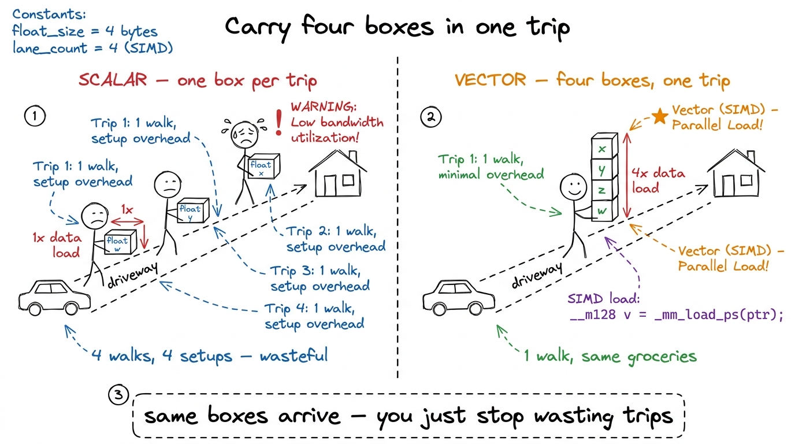
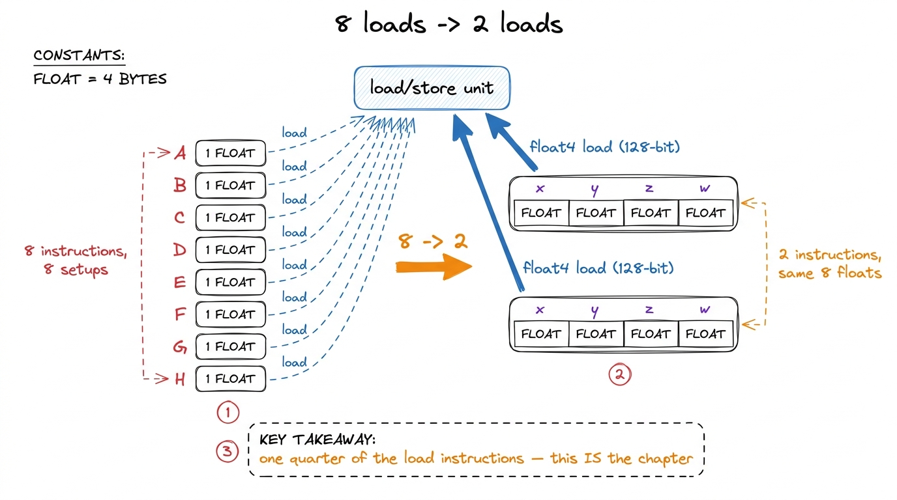
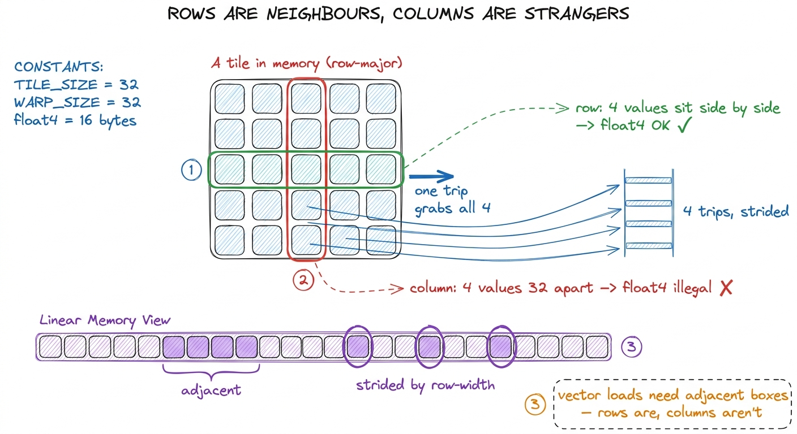
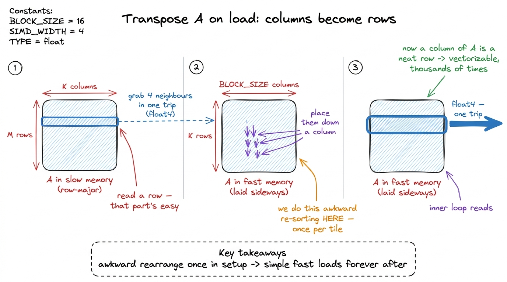
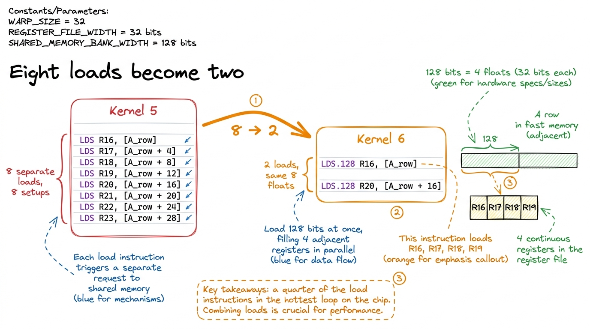

Teaching Kernel 6: carry four boxes at once
By the end of this chapter you can stand at a whiteboard and teach vectorized loads — why asking the GPU for four numbers at once instead of one makes a kernel roughly ten points faster — and then deliver the single most satisfying moment in the whole course: showing students the machine code where eight load instructions collapse into two.
This is a short idea with a big payoff. The math does not change. Not a single byte moves differently. We just change the shape of how we ask for the data, and the kernel speeds up. That surprises students, and surprise is the best glue there is. Your job is to set it up so the surprise lands.
Where we are on the ladder
Remind the room, in one breath, how far they've come. We've been climbing a ladder of matmul kernels, each faster than the last. Kernel 5 — where every thread computes an 8×8 patch of the answer — already hit 68.7% of cuBLAS (cuBLAS is NVIDIA's own hand-tuned library, our "100% is the pro" yardstick). That is a genuinely good kernel. The calculators are busy. Shared memory is doing honest work.
When a kernel gets that good, there's no single dumb mistake left to fix. The profiler stops shouting and starts whispering. And the whisper it makes here is about one small, almost embarrassing thing: we are loading our numbers one at a time, and the hardware would much rather hand them over four at a time.
The plain idea: carry four boxes in one trip
Every time the GPU fetches a number from memory, there's a fixed cost to set up the trip — figure out the address, book an instruction slot, send the request through the load unit. That setup cost is paid whether you fetch a little or a lot.
A single float is 32 bits. But the load unit can carry 128 bits — four floats — in one instruction, for the same setup cost. So if you need four numbers that happen to sit next to each other in memory, you have a choice: make four separate trips, or make one trip that grabs all four. Same numbers arrive either way. One way pays the setup cost four times; the other pays it once.

figure rendering · The whole idea in one picture: four floats carried in one trip cost thfloat4."The tiny by-hand number
Put concrete numbers on the board. Say each thread needs eight of A's values for one step of its work.
- The scalar way: eight separate load instructions.
load, load, load, load, load, load, load, load. Eight setups. - The vector way: each
float4grabs four. Eight values ÷ four-per-load = two load instructions. Two setups.
Eight becomes two. Write it that big on the board — 8 → 2 — and circle it. That fraction, one quarter of the instructions, is the entire chapter. Everything else is explaining why it's allowed and proving it really happened.

figure rendering · The by-hand count as a diagram: eight scalar loads versus two 128-bitfloat4: first load grabs 0,1,2,3. Second load grabs 4,5,6,7. Done — two loads. Eight into two. Same eight numbers land in the same registers. We just stopped asking one at a time."The catch: the four boxes must be neighbours
Here's the honest complication, and it's the interesting part of the lesson. You can only grab four in one trip if the four sit right next to each other in memory. The hardware can carry a stack of four adjacent boxes, but it cannot run around the warehouse gathering four boxes off four different shelves in one trip. There's no "scatter-grab."
Now look at what our kernel actually needs. In the inner loop, each thread wants a little row slice of matrix B and a little column slice of matrix A.
- B's slice is a row. In memory, a row's numbers sit next to each other. Neighbours. So vectorizing B is free — a row is already four-boxes-in-a-stack.
- A's slice is a column. And here's the problem: in memory, a column's numbers are not neighbours. They're spread far apart — the next value in a column lives a whole row-width away. Four values from a column live 32 boxes apart, on four different shelves. You cannot grab them in one trip. A
float4over a column is simply illegal.
float4 the A side too?" The fix is one sentence with your hands. Sweep a hand sideways — "a row's numbers are neighbours in memory." Then sweep a hand down — "a column's numbers are far apart, one row-width between each." Vector loads need neighbours. Rows are neighbours; columns are strangers. That's the whole obstacle.
figure rendering · Why B vectorizes for free but A does not: in memory a row's values areThe fix: rearrange A once so its columns become rows
We don't want to give up on vectorizing A. So we use a classic trick: transpose A as we load it into fast memory.
Here's the plain-words version. Before the inner loop runs its thousands of steps, we first copy a tile of A from slow memory into fast shared memory. That copy is a one-time setup, done once per tile. So while we're copying, we deliberately lay the numbers down sideways — we write A's columns as if they were rows. Now, in the hot inner loop that runs thousands of times, the thing that used to be a strided column is a nice contiguous row. Neighbours again. Vectorizable.

figure rendering · Transposing A while loading it moves the strided access out of the hot1 The transpose itself is the one place we give up vectorization on purpose. Reading A from slow memory is still one fat float4 (four neighbours in a row), but placing those four into four different columns of fast memory is four separate small stores. We pay four scalar stores once per tile to buy back two-instead-of-eight loads thousands of times. Easy trade.
The real payoff: reading the machine's own words
Now the centrepiece. This is where the chapter earns its title, and where you must slow all the way down.
Here is the thing students don't know yet: the code you write is not the code that runs. A CUDA kernel goes through translation stages, and the final honest version — the real instructions the chip runs — is called SASS (the machine's native assembly). There's an in-between version called PTX, but PTX is a polite fiction about widths that the final compiler decides later. So to prove your float4 really became a four-box trip, you don't trust the source or PTX. You look at the SASS.
So we compile kernel 5 and kernel 6, and we put their inner loops side by side. In kernel 5, loading A's eight values looks like eight instructions — eight separate LDS (load-from-shared) lines:
LDS R16, [R8]
LDS R17, [R8+0x4]
LDS R18, [R8+0x8]
LDS R19, [R8+0xc]
LDS R20, [R8+0x10]
LDS R21, [R8+0x14]
LDS R22, [R8+0x18]
LDS R23, [R8+0x1c]In kernel 6, the exact same eight floats arrive in two instructions — two LDS.128 (the .128 means "128 bits wide," i.e. four floats at once):
LDS.128 R16, [R8]
LDS.128 R20, [R8+0x10]
figure rendering · The signature moment rendered in machine code: eight scalar loads collThe number
Run the benchmark. Kernel 6 reaches 78.4% of cuBLAS, up from kernel 5's 68.7% — roughly a ten-point jump from a change that moved not one byte differently and did not touch a single multiply.
2 The exact percentage wobbles a little with matrix size and driver version, but the direction and rough size are rock-solid: vectorizing loads on top of a good tiled kernel is reliably worth about ten points of cuBLAS on modern NVIDIA hardware. The shorter instruction stream sometimes buys even more, because it also eases pressure on the instruction cache.
Be honest about why it worked. Two real things happened. First, we cut the load instructions the scheduler must issue in the hot loop, so more of each cycle goes to math instead of load bookkeeping. Second, one wide memory request is cleaner for the hardware than four narrow ones. The transpose made both legal for A. No magic — just fewer, fatter trips.
The bridge to next time
Leave them with a cliffhanger. Our tidy transpose, the thing that saved us, quietly rearranged which threads touch which parts of fast memory. And fast memory is split into lanes (called "banks"). If two threads now reach for the same lane at the same time, they have to wait in line — a "bank conflict." So the next kernel isn't another loading trick; it's going back to inspect the traffic pattern our own clever transpose just created. That honesty — every fix creates the next problem — is the rhythm of the whole workshop.
You can now teach
- Vectorized loads as "carry four boxes in one trip": the setup cost is paid per-trip, so grabbing four adjacent floats in one
float4beats four separate loads. - The 8 → 2 by-hand count: eight scalar loads collapse into two 128-bit loads, a quarter of the instructions for the same bytes.
- The catch and the fix: vector loads need adjacent values, so rows vectorize free but columns don't — until you transpose A on load, paying the awkward rearrangement once so the hot loop stays simple.
- The read-the-SASS reveal: eight
LDSlines becoming twoLDS.128lines in the machine's own code — the most satisfying demo in the course — and why you trust SASS over your source. - The ten-point number (68.7% → 78.4% of cuBLAS) and the honest reason it works: fewer instruction slots wasted on load bookkeeping once the kernel is instruction-bound, not data-bound.
- The principle worth naming: pay for awkward work once in setup so the loop you run ten thousand times gets to be fast.